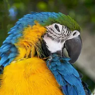

Pagina omslaan

Slaat de laag om als een pagina: een hoek komt omhoog en rolt om, zodat de achterkant van de pagina zichtbaar wordt. Animeer Voortgang om de pagina om te slaan. Met Vorm volgen aan slaat de pagina om vanaf de randen van wat zichtbaar is, zodat een rond beeld of een 3D-model vanaf zijn eigen rand omkrult in plaats van vanaf een onzichtbaar kader.
Instellingen
| Instelling | Type | Bereik | Standaard |
|---|---|---|---|
| Voortgang | Getal | 0% tot 100% | 50% |
| Straal | Getal | 0 tot 1 | 0.1 |
| Hoek | Hoek | -3600° tot 3600° | 38° |
| Kleur achterkant | Kleur | – | #888888 |
| Dekking achterkant | Getal | 0% tot 100% | 100% |
| Glans | Getal | 0% tot 100% | 100% |
| Schaduw | Getal | 0% tot 100% | 80% |
| Vorm volgen | Aan of uit | – | Aan |
| Stijl | Keuze | Klassiek, Standaard | Klassiek |